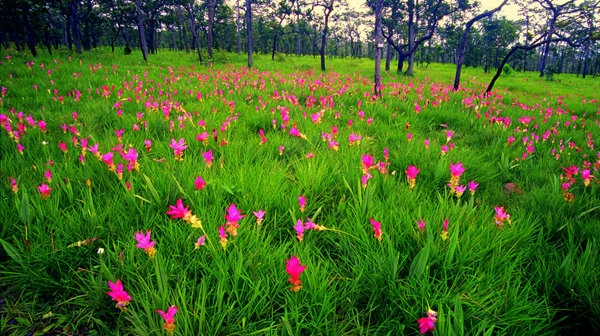

ทุ่งดอกกระเจียวป่าหินงาม ตั้งอยู่ในเขตอุทยานแห่งชาติป่าหินงาม ซึ่งตั้งอยู่ในเขตอำเภอ เทพสถิต จ.ชัยภูมิ ที่นี่นอกจะเป็น ทุ่งดอกกระเจียวถือเป็นไฮไลต์ที่เด่นที่สุดของการมาท่องเที่ยวที่นี่การมาเที่ยวชมที่นี่ นักท่องเที่ยวจะได้สัมผัสกับทุ่งบัวสวรรค์หรือ ดอกกระเจียว ราชินีแห่งมวลไม้ดอกของขุนเขาป่าหินงาม ออกดอกสีชมพูอมม่วง ที่จะทยอยผลิบานเป็นระยะเวลา 2 เดือน ที่ออกปีละครั้ง ชูช่อล้อสายลมและสายหมอก ขึ้นเต็มทั่วผืนป่า ทุ่งดอกกระเจียว ถือเป็นไฮไลต์ท่องเที่ยวช่วงฤดูฝนแห้งแล้ง จะกลับคืนสู่ความเขียวขจี และแต่งแต้มด้วยความ สดใสของกระเจียวที่ผิดอกสีชมพูเต็มทุ่งหญ้ากว้าง ด้วยความงดงามตระการตาของ ดอกสีชมพูอมม่วงขึ้นเต็มไป ทั่วผืนป่า ตัดกับพื้นสีเขียวขจีของหญ้าเพ็ก และโขดหินธรรมชาติ อีกทั้งรูปลักษณ์สวยงามวิจิตรพิสดาร ทำให้เป็นทุ่งดอกกระเจียวใน อุทยานแห่งชาติป่าหินงาม เป็นทุ่งดอกกระเจียวที่ใหญ่และงดงามที่สุดในประเทศไทย
การเดินทางมาชมทุ่งดอกกระเจียวที่สวยงามที่สุด คือ ในช่วงเช้าที่มีสายหมอกบางๆ ปกคลุม แต่ถ้าหากมาในช่วง บ่ายที่ฝนเพิ่ง ตกใหม่ๆ ก็จะเจอบรรยากาศแบบนี้ได้เช่นกัน นอกจากนี้การเที่ยวชมเส้นทางเดินศึกษาธรรมชาติทุ่งดอกกระเจียวแล้วยังสามารถชม แหล่งท่องเที่ยว บริเวณข้างเคียงได้อีกด้วย เช่น ป่าหินงาม ซึ่งจะมีก้อนหินรูป ลักษณ์แปลกตา เช่น รูปถ้วยรางวัลฟุตบอลฟีฟ่า รูปดอกเห็ดเขาประตูชุมพล น้ำตกเทพประทาน